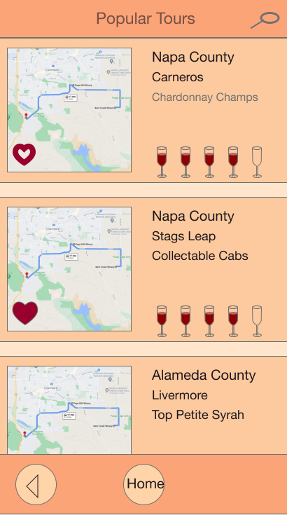

Nathan Tisdale
Projects
About
Met Museum Catalog
Written in Python using Tkinter
Usability Studies
Reverse Camera Usability
Culminating Exhibitions Portal
Site created with Python and Django and Azure Cloud
That Wine is Mine

Popular Tours page from Adobe XD prototype